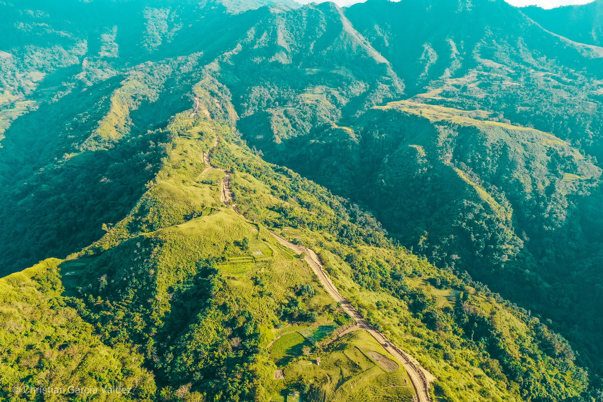
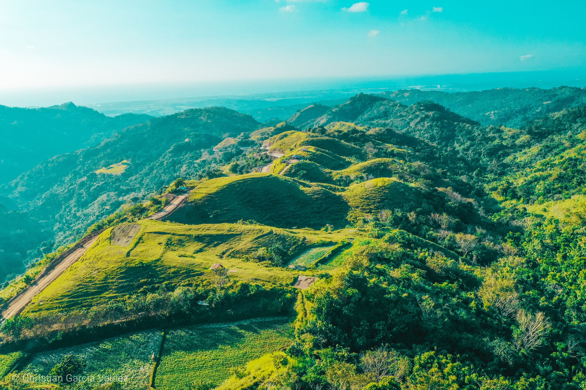
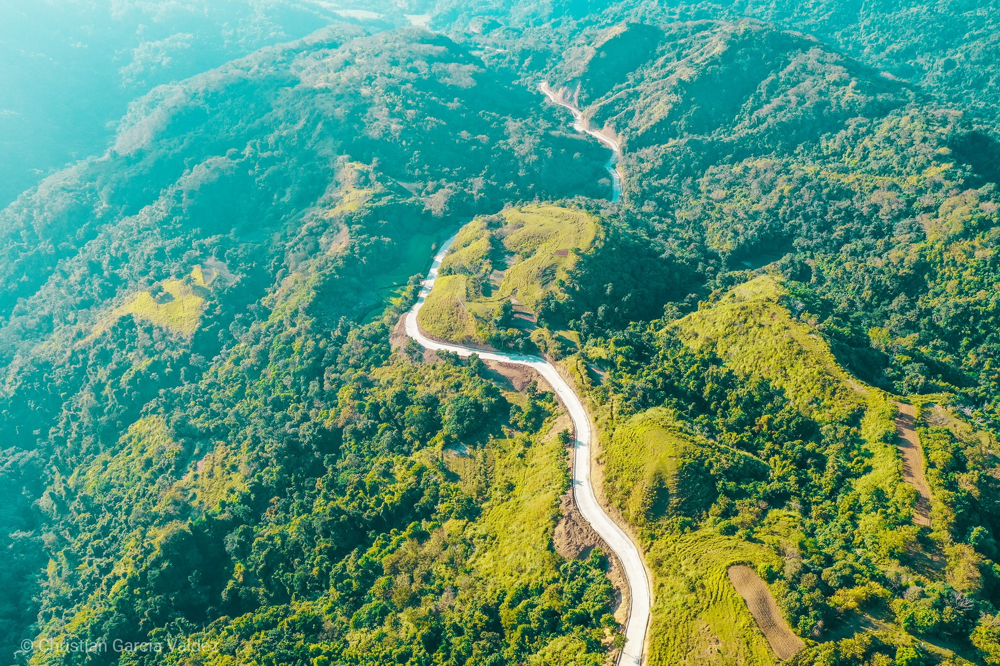
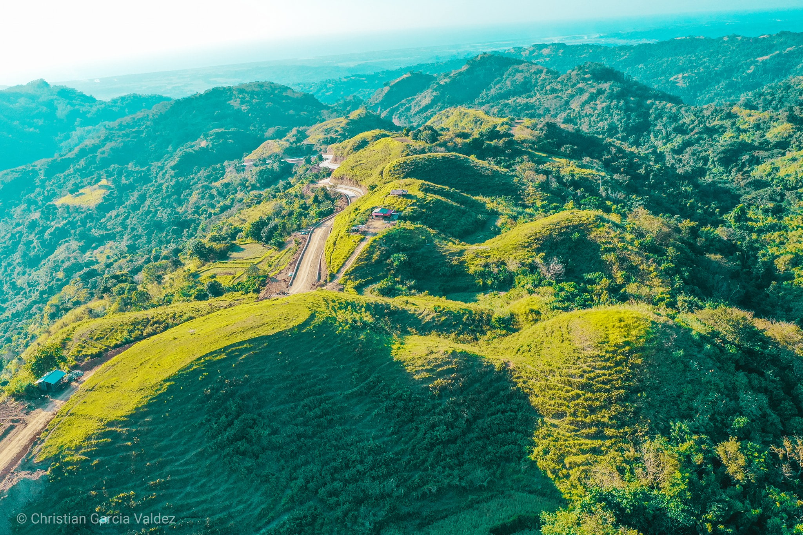
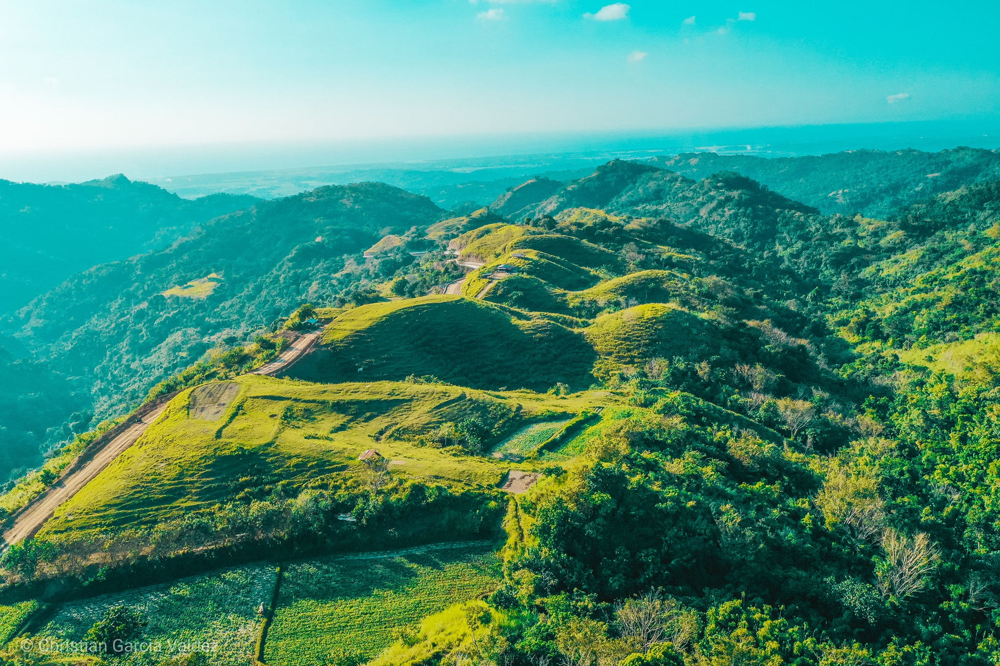
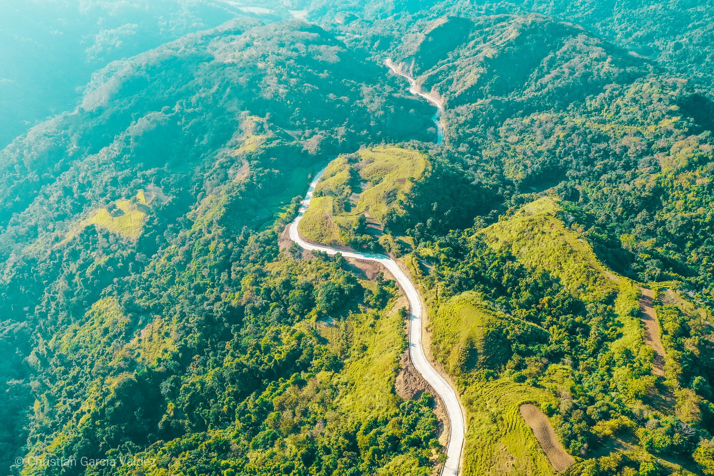
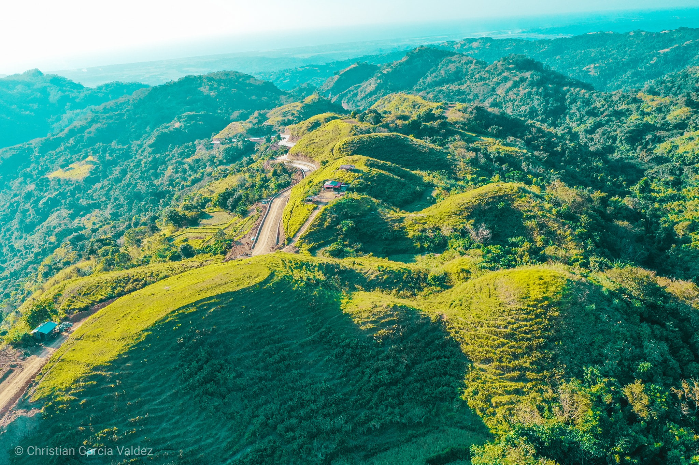
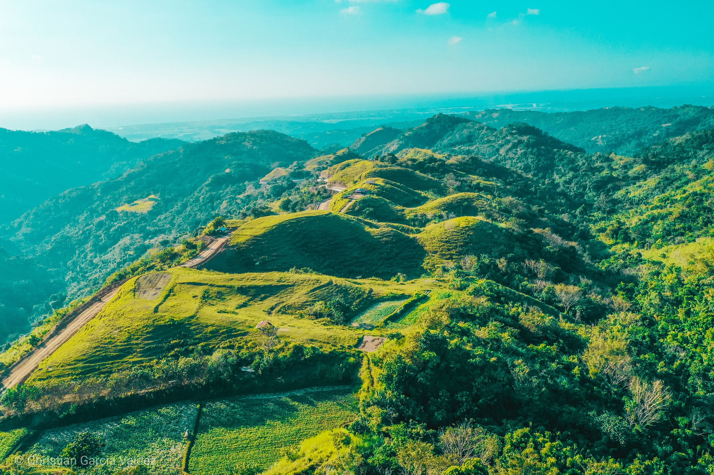
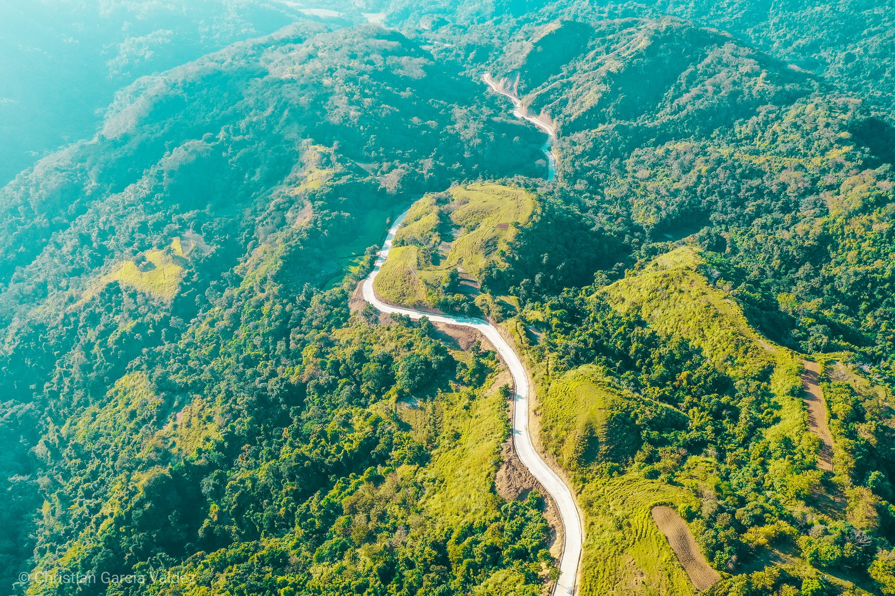
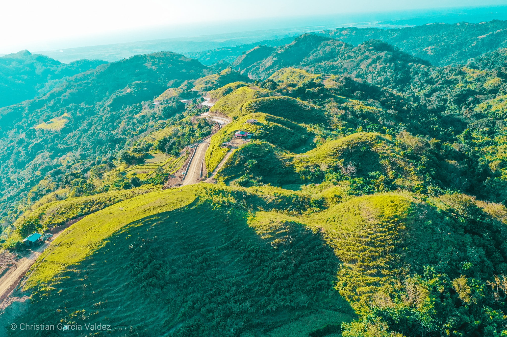

☰
Home
Attractions
Potential Tourist Spots ▸
Fine Sand Beaches
Greenhills
Mangrove Farms
Other Facilities
Emerging Tourist Spots ▸
Churches
Waterfalls
Historical Tourism
Town Products
Hotel & Resorts
Restaurants
Daytrips
About Us
Green Hills
Explore The Beauty and feel the ambience of the Greenhills of Sta. Cruz.
View Map

  


 




